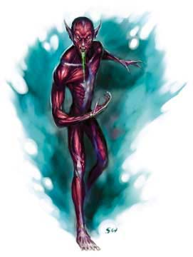

中型不死生物

| 生命骰： | 10d12 (65 hp) |
| 先攻： | +1 |
| 速度： | 30 英尺 |
| 防御等级： | 14 (+1 敏捷，+3 天生)，接触 11，措手不及 13 |
| 基本攻击／擒抱： | +5/+8 |
| 攻击： | 挥击 +9 近战 |
| 全力攻击： | 2 挥击 +9 近战 |
| 伤害： | 挥击 1d6+3 附加 1d6 强酸伤害 |
| 面宽／触及： | 5 英尺/5 英尺 |
| 特殊攻击： | 腐蚀之血，命令不死生物，骇怖凝视，喷吐酸血 |
| 特殊能力： | 免疫强酸，闪电抗力 15，快速医疗 4，火焰抗力 15，驱散抗力 +2，不死生物特性 |
| 豁免： | 强韧 +3，反射 +4，意志 +9 |
| 属性： | 力量 16，敏捷 13，体质 ―，智力 13，感知 14，魅力 15 |
| 技能： | 攀爬 +16，躲藏 +14，聆听 +14，潜行 +18，搜索 +8，侦察 +14 |
| 专长： | 警觉，盲斗，猛力攻击，武器专攻（挥击） |
| 地域： | 地下 |
| 组织： | 单独，成对或团伙 (3�C6) |
| 挑战等级： | 7 |
| 宝物： | ― |
| 阵营： | 总是混乱邪恶 |
| 进化： | ― |
库斯-玛伦是一种由齐雅温莎莉（Kiaransalee）的牧师创造出来的令人作呕的不死生物。这些牧师热衷于剥下他们敌人的皮――移除每一片皮肤――然后将他们以这种骇人的形态复活。
库斯-玛伦大体上呈现出它生前的形态，但它没有皮肤或外露的脂肪――只有覆盖在骨骼上的肌肉。腐蚀性的血液不断从其身体渗出。与僵尸（它们与僵尸有某种相似之处）不同，库斯-玛伦既非无心智者，也不会腐烂。
库斯-玛伦凶猛而狡猾地战斗，在接近对手之前充分利用其喷吐酸血和骇怖凝视攻击。在群体中，库斯-玛伦们一次集中围攻一个敌人，而不是将攻击分散到一群对手身上。
腐蚀之血 (Caustic Blood) (Ex)：任何被库斯-玛伦挥击命中的目标，会受到来自该生物腐蚀之血的额外 1d6 点强酸伤害。用天生武器或徒手攻击命中库斯-玛伦的生物也会受到 1d6 点强酸伤害。
命令不死生物 (Command Undead) (Su)：库斯-玛伦能如同 5 级邪恶牧师一般命令不死生物。它不能呵斥不死生物，但可以反制驱散（dispel turning）或鼓舞（bolster）其他不死生物。
骇怖凝视 (Horrifying Gaze) (Su)：30 英尺内与库斯-玛伦死亡凝视相对的活物，必须成功通过一次意志豁免（DC 17），否则将因恐惧而畏缩（cower）。畏缩的生物失去其AC上的敏捷加值（如果有），并且无法进行任何动作。攻击畏缩角色的敌人获得 +2 攻击加值。
喷吐酸血 (Spit Blood) (Ex)：每 1d4 轮一次，以一个标准动作，库斯-玛伦可以喷吐一团其酸性血液，进行一次类似投炸武器（grenadelike）的攻击。库斯-玛伦必须进行一次远程接触攻击以命中目标。此攻击的射程增量为 10 英尺，最大射程为五个射程增量。这团酸命中直接击中目标时造成 2d6 点强酸伤害，并对落点 5 英尺范围内的所有生物造成 2 点强酸伤害。
快速医疗 (Fast Healing) (Ex)：只要库斯-玛伦拥有至少 1 点生命值，它就能以每轮 4 点的速度恢复失去的生命值。快速医疗不能恢复因饥饿、口渴或窒息而损失的生命值，也无法让库斯-玛伦再生或重新接上失去的身体部位。
驱散抗力 (Turn Resistance) (Ex)：在尝试驱散（turn）、呵斥（rebuke）、命令（command）或鼓舞（bolster）时，库斯-玛伦被视为拥有比其实际生命骰多 2 的不死生物。
不死生物特性 (Undead Traits)：库斯-玛伦免疫影响心灵效果（mind-affecting effects）、毒素、睡眠、麻痹、震慑、疾病、即死效果（death effects）、死灵系效果（necromantic effects）（除非它们专门影响不死生物），以及任何需要强韧豁免的效果（除非该效果也对物体生效）。它不受重击、瘀伤（subdual damage）、属性伤害、属性吸取（ability drain）或巨创致死（death from massive damage）影响。库斯-玛伦无法被复活（raise），复活术（resurrection）仅在其自愿时才生效。库斯-玛伦拥有黑暗视觉（60 英尺范围）。
技能：库斯-玛伦在潜行和侦察检定上有 +4 种族加值。